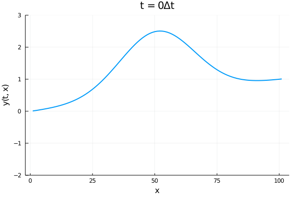
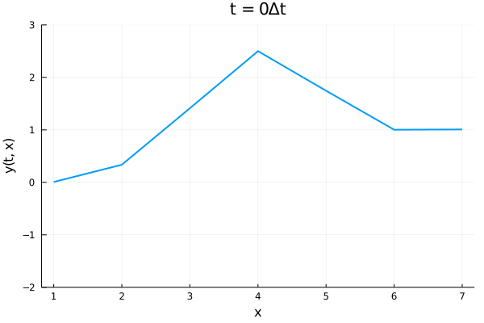

Wave equation
Wave equation is one of the most important differential equation. It models wave propagation and has numerous applications in acoustics, electromagnetics or fluid dynamics.
Statement
We consider the simplest case of a one-dimensional wave equation, such as a string. The wave equation in $t\in[0,T]$ has the form
\[\frac{\partial^2 y(t,x)}{\partial t^2} = c^2 \frac{\partial^2 y(t,x)}{\partial x^2}.\]
The function $y:[0,T]\times [0,L]\to\mathbb R$ describes the displacement of the string. To obtain a complete formulation, we need to add boundary (in space) and initial (in time) conditions. Assuming that the string is fixed on its edges, the boundary conditions
\[y(\cdot,0) = y_0, \quad y(\cdot,L) = y_L\]
are time-independent. The initial conditions are prescribed by functions
\[\begin{aligned} y(0,\cdot) &= f(\cdot), \\ \frac{\partial y(0,\cdot)}{\partial t} &= g(\cdot), \end{aligned}\]
which vary in space. For consistency, we need $f(0)=y_0$ and $f(L)=y_L$.
Solving the wave equation
The following few exercises show how to solve the wave equation via the finite differences technique. It discretizes both time and space into equidistant discretization. For a function $h$ and a discretization stepsize $\Delta x$, the approximation of the first derivative reads
\[\frac{\partial}{\partial x}{h(x)} = \frac{h(x+\Delta x) - h(x)}{\Delta x}.\]
A similar formula for the second derivatives reads
\[\frac{\partial^2}{\partial x^2}{h(x)} = \frac{h(x+\Delta x) - 2h(x) + h(x-\Delta x)}{\Delta x^2}.\]
The following exercise derives the mathematical formulas needed for solving the wave equation.
Consider equidistant discretizations with stepsizes $\Delta t$ and $\Delta x$. Derive mathematical formulas for solving the one-dimensional wave equation on $[0,T]\times [0,L]$ by applying finite differences in time and space. Do not write any code.
Hint: Start with the initial time and compute the solution after each time step. Use the condition on $f$ at the first time step, the condition on $g$ at the second time step and the wave equation at further steps.
Solution:
The wave equation needs to satisfy the boundary conditions
\[y(t,0) = f(0),\qquad y(t,L) = f(L) \qquad\text{ for all }t\in\{0,\Delta t,2\Delta t,\dots,T\}\]
and the initial conditions
\[y(0,x) = f(x) \qquad\text{ for all }x\in\{\Delta x,2\Delta x,\dots,L-\Delta x\}.\]
We exclude $x\in \{0,L\}$ from the last equation because the boundary conditions already prescribe these values.
Now we start increasing time. For the values at $\Delta t$, we approximate the initial condition for the derivative by the finite difference and get
\[y(\Delta t, x) = y(0, x) + \Delta t g(x).\]
At further times, we use the finite difference approximation of the second derivative to arrive at
\[\frac{y(t+\Delta t,x) - 2y(t,x) + y(t-\Delta t,x)}{\Delta t^2} = c^2 \frac{y(t,x+\Delta x) - 2y(t,x) + y(t,x-\Delta x)}{\Delta x^2}.\]
Since we already know the values at $t$ and $t - \Delta t$, we rearrange the previous formula to obtain the values at the next time. This yields the final formula:
\[y(t + \Delta t,x) = \frac{c^2\Delta t^2}{\Delta x^2} \Big(y(t,x + \Delta x) - 2y(t,x) + y(t,x - \Delta x)\Big) + 2y(t,x) - y(t - \Delta t,x).\]
The most challenging part is done: We have finished the discretization scheme. Now we need to code it. We will employ a structure storing the wave equation parameters.
struct Wave
f
g
c
endThe first exercise solves the wave equation.
Write the function solve_wave(T, L, wave::Wave; n_t=100, n_x=100) that solves the wave equation.
Hint: Follow the procedure from the previous exercise. Discretize time and space, initialize the solution, add the boundary conditions, add the initial conditions and finally, iterate over time.
Solution:
We first discretize both time and space by the range function. Then we initialize the matrix y. We decide that the first dimension corresponds to time and the second one to space. We set the boundary conditions and fill y[:,1] with wave.f(0) and y[:,end] with wave.f(L). Since the wave at the initial moment equals to $f$, we set y[1,2:end-1] = wave.f.(xs[2:end-1]). Since the condition at $t=\Delta t$ amount to
\[y(\Delta t, x) = y(0, x) + \Delta t g(x),\]
we write y[2,2:end-1] = y[1,2:end-1] + Δt*wave.g.(xs[2:end-1]). We must not forget to exclude the boundary points because the string position is attached there. For the remaining times, we use the formula
\[y(t + \Delta t,x) = \frac{c^2\Delta t^2}{\Delta x^2} \Big(y(t,x + \Delta x) - 2y(t,x) + y(t,x - \Delta x)\Big) + 2y(t,x) - y(t - \Delta t,x).\]
This gives rise to the following function.
function solve_wave(T, L, wave::Wave; n_t=100, n_x=100)
ts = range(0, T; length=n_t)
xs = range(0, L; length=n_x)
Δt = ts[2] - ts[1]
Δx = xs[2] - xs[1]
y = zeros(n_t, n_x)
# boundary conditions
y[:,1] .= wave.f(0)
y[:,end] .= wave.f(L)
# initial conditions
y[1,2:end-1] = wave.f.(xs[2:end-1])
y[2,2:end-1] = y[1,2:end-1] + Δt*wave.g.(xs[2:end-1])
# solution for t = 2Δt, 3Δt, ..., T
for t in 2:n_t-1, x in 2:n_x-1
∂y_xx = (y[t, x+1] - 2*y[t, x] + y[t, x-1])/Δx^2
y[t+1, x] = c^2 * Δt^2 * ∂y_xx + 2*y[t, x] - y[t-1, x]
end
return y
endThe best visualization of the wave equation is via animation. Each frame will be a plot of a row of y. We use the keyword arguments kwargs, where we store additional arguments for plotting. We run the for loop over all rows, create the animation via the @animate macro and save it into anim. To save the animation to the hard drive, we use the gif function.
using Plots
function plot_wave(y, file_name; fps = 60, kwargs...)
anim = @animate for (i, y_row) in enumerate(eachrow(y))
plot(
y_row;
title = "t = $(i-1)Δt",
xlabel = "x",
ylabel = "y(t, x)",
legend = false,
linewidth = 2,
kwargs...
)
end
gif(anim, file_name; fps, show_msg = false)
return nothing
endNow we can finally plot the solution.
Solve the wave equation for $L=\frac32\pi$, $T=240$, $c=0.02$ and the initial conditions
\[\begin{aligned} f(x) &= 2e^{-(x-\frac L2)^2} + \frac{x}{L}, \\ g(x) &= 0. \end{aligned}\]
Use time discretization with stepsize $\Delta t=1$ and the space discretization with number of points $n_x=101$ and $n_x=7$ steps. Plot two graphs.
Solution:
First, we assign the parameters
f(x,L) = 2*exp(-(x-L/2)^2) + x/L
g(x) = 0
L = 1.5*pi
T = 240
c = 0.02Now we create the wave structure, compute the solution and plot it for with different values of $n_x$.
wave = Wave(x -> f(x,L), g, c)
y1 = solve_wave(T, L, wave; n_t=241, n_x=101)
plot_wave(y1, "wave1.gif"; ylims=(-2,3), label="")
y2 = solve_wave(T, L, wave; n_t=241, n_x=7)
plot_wave(y2, "wave2.gif"; ylims=(-2,3), label="")

If there are two waves in different phases (positions), please refresh the page. The waves should start from the same location and move at the same speed. This is an important property of any physical system: it is consistent. If we use a different discretization, their behaviour should be roughly similar. Of course, a finer spatial discretization results in smoother lines, but both waves have similar shapes and move at similar speeds. If we see that one moves significantly faster, there is a mistake in the code.